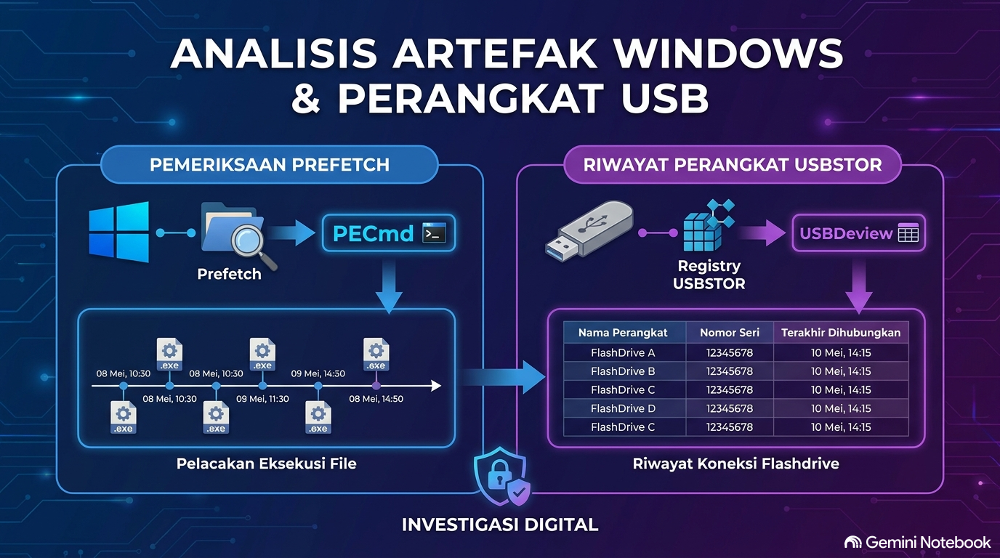
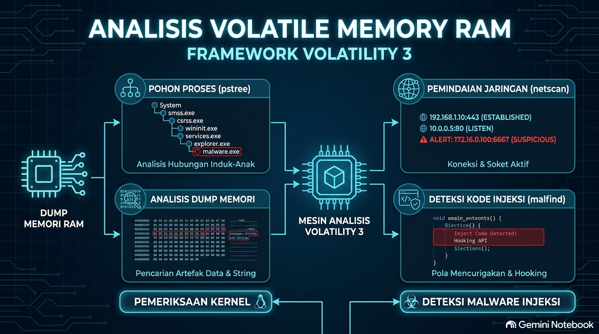
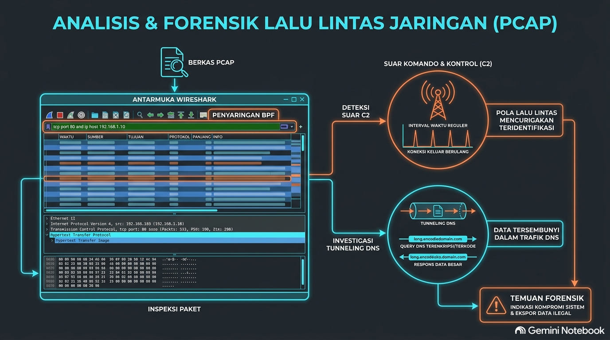
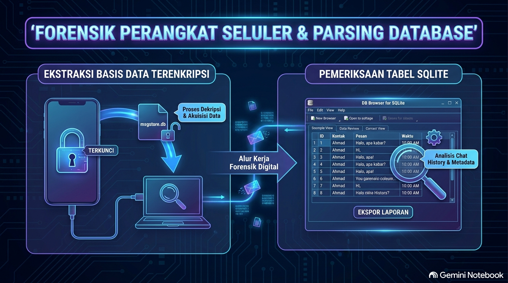
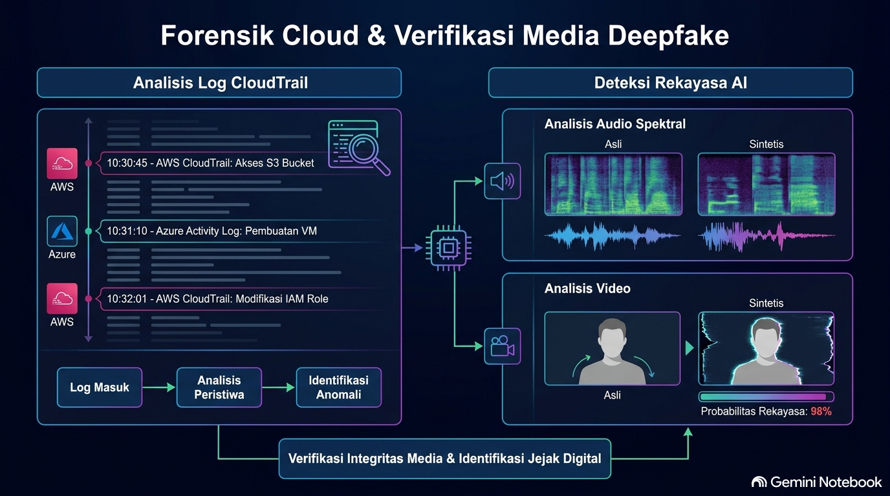

Review Komprehensif, Sertifikasi Profesi & Penguatan Bukti Digital
Integrasi metodologi saintifik Digital Forensics & Incident Response (DFIR), pemetaan standar kompetensi global & nasional, tantangan bukti Cloud/AI, serta strategi sukses Ujian Akhir Semester.
Capaian Pembelajaran (Sub-CPMK 15) & Peta Jalan DFIR
Target Kompetensi Holistis Mahasiswa
Mahasiswa mampu menyatukan pemahaman holistis atas empat pilar forensik digital (Disk, Memori, Jaringan, dan Mobile), memetakan standar sertifikasi profesi internasional (CHFI, EnCE, GCFE) dan SKKNI Indonesia, memahami tantangan forensik mutakhir (Cloud & AI-generated evidence), serta mempersiapkan diri secara optimal menghadapi evaluasi akhir semester (UAS).
Disk & Filesystem Forensics
Akuisisi bit-stream (RAW/E01), struktur Master File Table ($MFT), pemulihan unallocated space, file carving magic bytes, & Volume Shadow Copies.
Volatile Memory (RAM)
Ekstraksi memori hidup (DumpIt/FTK), pembedahan kernel Volatility 3 (pslist, pstree, netscan, malfind), & ekstraksi kunci BitLocker.
Network & Traffic Forensics
Analisis paket PCAP/PCAPNG, filter BPF Wireshark, deteksi C2 Beaconing, DNS Tunneling, & rekonstruksi file dari aliran HTTP/SMB.
Mobile Device Forensics
Akuisisi via ADB/MOBILedit, isolasi sinyal kantung Faraday, dekripsi & parsing SQLite chat (msgstore.db), serta ekstraksi GPS EXIF.
Disk & Filesystem Forensics
Pemeriksaan media penyimpanan permanen secara forensik tanpa mengubah integritas bit asli menggunakan hardware write-blocker dan verifikasi hash kriptografi.
Kloning sektor-demi-sektor (RAW / E01) dan pembedahan metadata Master File Table ($MFT) pada NTFS untuk melacak timestamp MACB.
Pemulihan berkas terhapus pada unallocated space berdasarkan header/footer magic bytes serta ekstraksi riwayat sistem dari Volume Shadow Copies.
Analisis Prefetch via PECmd (waktu & jumlah eksekusi .exe) serta pelacakan nomor seri flashdisk di Registry USBSTOR via USBDeview.


Volatile Memory Forensics (RAM)
Berdasarkan Order of Volatility (RFC 3227), isi RAM wajib diamankan sebelum sistem dimatikan untuk menangkap jejak serangan fileless malware dan proses aktif.
Ekstraksi dump memori fisik secara langsung menggunakan DumpIt atau FTK Imager untuk mengamankan kunci enkripsi BitLocker yang tersimpan di RAM.
- • windows.pslist / pstree : Pohon hubungan induk-anak proses (
malware.exe). - • windows.netscan : Pemindaian soket & koneksi jaringan aktif/mencurigakan.
- • windows.malfind : Deteksi injeksi kode & API hooking tersembunyi.
Network & Traffic Forensics
Rekonstruksi aktivitas komunikasi jaringan dari rekaman paket untuk membuktikan pergerakan lateral peretas serta eksfiltrasi data rahasia.
Analisis rekaman PCAP / PCAPNG menggunakan Berkeley Packet Filter (BPF) seperti tcp port 80 and ip host 192.168.1.10.
Identifikasi sinyal Command & Control (C2) berinterval reguler serta penyelundupan data terenkode pada subdomain panjang (long.encodeddomain.com).
Mengembalikan dokumen, gambar, atau payload malware yang ditransmisikan melalui protokol HTTP dan SMB menjadi berkas utuh.


Mobile Device Forensics
Penanganan barang bukti perangkat seluler memerlukan isolasi jaringan ketat dan teknik dekripsi basis data aplikasi pesan instan sesuai panduan NIST SP 800-101 Rev. 1.
Penggunaan kantung Faraday (atau Airplane Mode) untuk mencegah remote wipe, diikuti ekstraksi logis/fisik via ADB dan MOBILedit Forensic.
Dekripsi dan pembedahan tabel msgstore.db menggunakan DB Browser for SQLite untuk mengungkap riwayat chat, kontak, serta koordinat GPS EXIF pada foto bukti.
Matriks Rangkuman Artefak Kunci Bukti Digital
| Tipe Bukti | Lokasi Artefak Utama | Alat Analisis Standar | Nilai Pembuktian di Sidang |
|---|---|---|---|
|
Eksekusi Program
|
C:\Windows\Prefetch
Amcache.hve
|
PECmd AmcacheParser | Membuktikan program malware benar-benar dijalankan pelaku beserta jumlah eksekusi dan timestamp terakhir. |
|
Aktivitas USB
|
Registry USBSTOR
Event ID 20001
|
USBDeview Registry Explorer | Membuktikan serial number unik flashdisk yang terhubung dan digunakan untuk menampung file curian. |
|
Riwayat Web
|
SQLite History
(Chrome / Edge)
|
Browsing History View | Membuktikan pencarian metode peretasan, pengunduhan eksploit, atau akses ke penyimpanan cloud pribadi. |
|
Komunikasi Chat
|
SQLite msgstore.db
(WhatsApp Database)
|
DB Browser for SQLite | Membuktikan pesan persekongkolan, perencanaan, dan instruksi kejahatan beserta cap waktu otentik. |
Standar Sertifikasi Profesi Digital Forensics
CHFI
Computer Hacking Forensic Investigator
Sertifikasi global paling populer yang mencakup metodologi investigasi forensik menyeluruh mulai dari jaringan, disk, web, database, hingga cloud & malware.
EnCE
EnCase Certified Examiner
Sertifikasi spesialisasi tingkat tinggi yang diakui luas oleh lembaga penegak hukum dan pengadilan internasional untuk pemeriksa ahli pengguna EnCase Forensic.
GCFE / GCFA
GIAC Certified Forensic Examiner / Analyst
Sertifikasi tingkat mahir berorientasi praktik mendalam pada analisis artefak Windows tingkat lanjut, analisis malware, dan threat hunting korporat.
Skema Penilai Forensik Digital
Standar Kompetensi Kerja Nasional Indonesia (SKKNI)
Pengakuan kompetensi resmi negara Republik Indonesia bidang forensik siber yang menjadi rujukan legalitas saksi ahli di peradilan Indonesia.
Tren Tantangan Forensik Modern: Cloud & Generative AI
Transformasi infrastruktur komputasi awan dan kecerdasan buatan generatif menuntut metode investigasi baru melampaui penyitaan perangkat keras konvensional.
Tidak ada harddisk fisik yang dapat disita secara langsung. Penyelidik mengandalkan API Snapshot, AWS CloudTrail logs, dan Azure Activity Logs yang tersebar di yurisdiksi lintas batas negara (cross-border data sovereignty).
Pembuktian keaslian rekaman video, suara percakapan, atau gambar bukti digital menggunakan analisis spektral frekuensi audio dan deteksi artefak kompresi model Generative Adversarial Networks (GAN).

Panduan Persiapan UAS (Pertemuan 16 — Bobot 30%)
Portofolio BAP Lengkap
Penggabungan hasil analisis kasus komprehensif (Pertemuan 9 s.d. 14) ke dalam format resmi Berita Acara Pemeriksaan (BAP).
Ujian Teori & Kasus Mandiri
10 soal skenario pemecahan kasus kejahatan siber terpadu (dapat dilatih pada menu Latihan 16 portal).
Integritas Kriptografi
Seluruh berkas bukti & laporan yang dilampirkan wajib divalidasi dengan nilai hash SHA-256 yang akurat.
Daftar Pustaka & Standar Rujukan Modul 15
- EC-Council. (2022). Computer Hacking Forensic Investigator (CHFIv10) Courseware.
- NIST SP 800-101 Rev. 1 — Guidelines on Mobile Device Forensics.
- BSSN (Badan Siber dan Sandi Negara). (2021). Pedoman Teknis Penanganan Insiden Siber Nasional.
- ENISA (European Union Agency for Cybersecurity). (2020). Digital Forensics in the Cloud: Challenges and Recommendations.